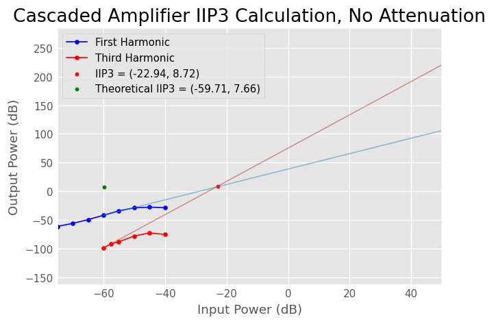
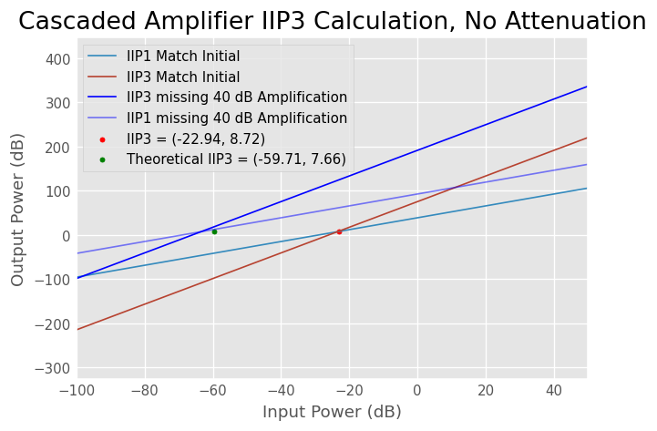
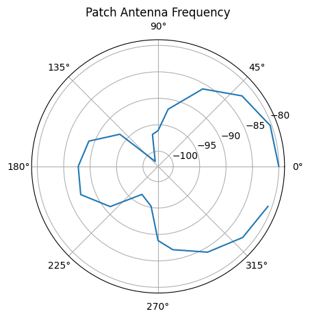
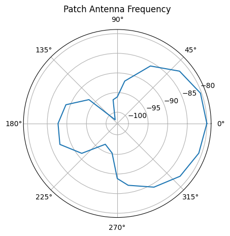
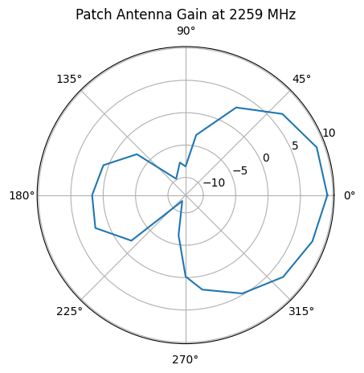
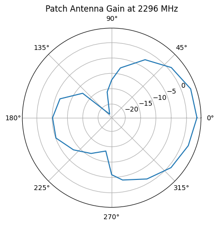
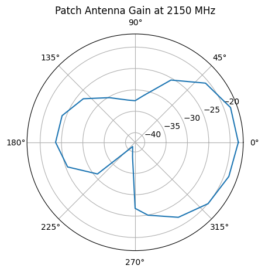
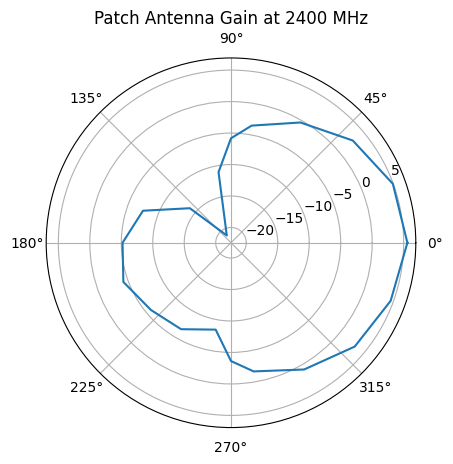
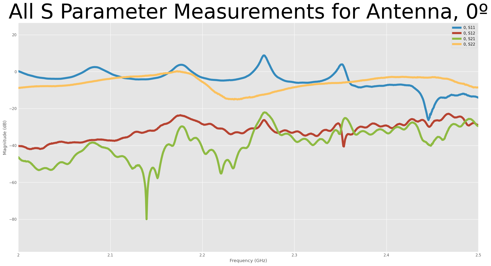

import numpy as np
import scipy as sp
import matplotlib.pyplot as plt
import skrf as rf## 3d - Defining IIP1, IIP2, IIP3
# ## IIP1
in_pow_3d_iip1 = [-75, -70, -65, -60, -55, -50, -45, -40]
out_pow_3d_iip1 = [-61.3, -56, -49.5, -41.83, -34.1,-28.9,-27.8,-28.5]
plt.plot(in_pow_3d_iip1, out_pow_3d_iip1, 'bo-', label="First Harmonic")
## IIP3
in_pow_3d_iip3 = [-60, -57.5, -55, -50, -45, -40]
out_pow_3d_iip3 = [-98.9, -91.64,-88,-78,-72.6,-75.3]
plt.plot(in_pow_3d_iip3, out_pow_3d_iip3, 'ro-', label="Third Harmonic")
# ## Getting Polyfits for the IIPx Values
limit_iip1=6
[slp_3d_1, ic_3d_1] = np.polyfit(in_pow_3d_iip1[:limit_iip1], out_pow_3d_iip1[:limit_iip1],1)
limit_iip3=2
[slp_3d_3, ic_3d_3] = np.polyfit(in_pow_3d_iip3[:limit_iip3], out_pow_3d_iip3[:limit_iip3],1)
points = np.linspace(-60, 50, 100000)
polyfit_3d_iip1 = [ic_3d_1 + slp_3d_1*p for p in points]
polyfit_3d_iip3 = [ic_3d_3 + slp_3d_3*p for p in points]
plt.plot(points, polyfit_3d_iip1, alpha=0.5)
plt.plot(points, polyfit_3d_iip3, alpha=0.5)
x_val_3d = (out_pow_3d_iip1[0] - slp_3d_1*in_pow_3d_iip1[0] - (out_pow_3d_iip3[0] - slp_3d_3*in_pow_3d_iip3[0]))/(slp_3d_3-slp_3d_1)
y_val_3d = ic_3d_3 + slp_3d_3*x_val_3d
plt.scatter(x_val_3d, y_val_3d, c='red', label=f"IIP3 = ({x_val_3d:.2f}, {y_val_3d:.2f})")
plt.scatter(-59.71, 7.66, c='green', label=f"Theoretical IIP3 = ({-59.71:.2f}, {7.66:.2f})")
plt.title("Cascaded Amplifier IIP3 Calculation, No Attenuation")
plt.xlabel("Input Power (dB)")
plt.ylabel("Output Power (dB)")
plt.legend()
print(slp_3d_1)
print(slp_3d_3)1.3449714285714283
2.903999999999996
## 3d - Defining IIP1, IIP2, IIP3
# ## IIP1
in_pow_3d_iip1 = [-75, -70, -65, -60, -55, -50, -45, -40]
out_pow_3d_iip1 = [-61.3, -56, -49.5, -41.83, -34.1,-28.9,-27.8,-28.5]
# plt.plot(in_pow_3d_iip1, out_pow_3d_iip1, 'bo-', label="First Harmonic")
## IIP3
in_pow_3d_iip3 = [-60, -57.5, -55, -50, -45, -40]
out_pow_3d_iip3 = [-98.9, -91.64,-88,-78,-72.6,-75.3]
# plt.plot(in_pow_3d_iip3, out_pow_3d_iip3, 'ro-', label="Third Harmonic")
# ## Getting Polyfits for the IIPx Values
limit_iip1=6
[slp_3d_1, ic_3d_1] = np.polyfit(in_pow_3d_iip1[:limit_iip1], out_pow_3d_iip1[:limit_iip1],1)
limit_iip3=2
[slp_3d_3, ic_3d_3] = np.polyfit(in_pow_3d_iip3[:limit_iip3], out_pow_3d_iip3[:limit_iip3],1)
points = np.linspace(-100, 50, 100000)
polyfit_3d_iip1 = [ic_3d_1 + slp_3d_1*p for p in points]
polyfit_3d_iip3 = [ic_3d_3 + slp_3d_3*p for p in points]
polyfit_40dB_fixed_iip3 = [ic_3d_3 + slp_3d_3*(p+40) for p in points]
polyfit_40dB_fixed_iip1 = [ic_3d_1 + slp_3d_1*(p+40) for p in points]
plt.plot(points, polyfit_3d_iip1, label="IIP1 Match Initial")
plt.plot(points, polyfit_3d_iip3, label="IIP3 Match Initial")
plt.plot(points, polyfit_40dB_fixed_iip3, 'b', label="IIP3 missing 40 dB Amplification")
plt.plot(points, polyfit_40dB_fixed_iip1, 'b', alpha=0.5, label="IIP1 missing 40 dB Amplification")
x_val_3d = (out_pow_3d_iip1[0] - slp_3d_1*in_pow_3d_iip1[0] - (out_pow_3d_iip3[0] - slp_3d_3*in_pow_3d_iip3[0]))/(slp_3d_3-slp_3d_1)
y_val_3d = ic_3d_3 + slp_3d_3*x_val_3d
plt.scatter(x_val_3d, y_val_3d, c='red', label=f"IIP3 = ({x_val_3d:.2f}, {y_val_3d:.2f})")
plt.scatter(-59.71, 7.66, c='green', label=f"Theoretical IIP3 = ({-59.71:.2f}, {7.66:.2f})")
plt.title("Cascaded Amplifier IIP3 Calculation, No Attenuation")
plt.xlabel("Input Power (dB)")
plt.ylabel("Output Power (dB)")
plt.legend()
print(slp_3d_1)
print(slp_3d_3)1.3449714285714283
2.903999999999996
## Plotting Antenna Radiation Pattern
filenames = []
networks = []
s21_data = []
points=[0,20,40,60,80,90,100,120,140,160,180,200,220,240,260,270,280,300,320,340]
for i in points:
# we're looking at txt files first
print(i)
filenames = 'DP2/DP2_radar/' + f"{i}.S1P"
networks.append(rf.Network(filenames))
for net in networks:
# print(net['2100.5Mhz'].s_db[0])
s21_v = net['2276Mhz'].s_db[0][0][0]
s21_data.append(s21_v)
g_tx = 4.55 # dBm
l_val = 3e8/(2276e6) # meters
D_val = 1.4478 # meters
air_loss = 20 * np.log10(l_val / (4 * np.pi * D_val))
g_rx = []
air_loss = -20 * np.log10(3e8/2276e6 / ( 4 * np.pi * 3))
for s21 in s21_data:
val = s21 - g_tx - air_loss
g_rx.append(val)
# plot
ax = plt.subplot(111, polar=True)
# set zero west
# let set an azimuth for example, pi
angles = [p * 2 * np.pi / 360 for p in points]
plt.plot(angles, g_rx)
plt.title("Patch Antenna Frequency")
print(max(g_rx))0
20
40
60
80
90
100
120
140
160
180
200
220
240
260
270
280
300
320
340
-80.01544032546032
ax = plt.subplot(111, polar=True)
full_angles = angles
full_angles.append(0)
full_g_rx = g_rx
full_g_rx.append(g_rx[0])
plt.plot(full_angles, full_g_rx)
plt.title("Patch Antenna Frequency")Text(0.5, 1.0, 'Patch Antenna Frequency')
def get_polar_plot(freq_Mhz):
filenames = []
networks = []
s21_data = []
points=[0,20,40,60,80,90,100,120,140,160,180,200,220,240,260,270,280,300,320,340]
for i in points:
# we're looking at txt files first
filenames = 'DP2/DP2_radar/' + f"{i}.S1P"
networks.append(rf.Network(filenames))
for net in networks:
# print(net['2100.5Mhz'].s_db[0])
s21_v = net[f'{freq_Mhz}Mhz'].s_db[0][0][0]
s21_data.append(s21_v)
g_tx = 4.55 # dBm
l_val = 3e8/(freq_Mhz * 1e6) # meters
D_val = 1.4478 # meters
air_loss = 20 * np.log10(l_val / (4 * np.pi * D_val))
g_rx = []
for s21 in s21_data:
val = s21 - g_tx - air_loss
g_rx.append(val)
# plot
ax = plt.subplot(111, polar=True)
# set zero west
# let set an azimuth for example, pi
angles = [p * 2 * np.pi / 360 for p in points]
full_angles = angles
full_angles.append(0)
full_g_rx = g_rx
full_g_rx.append(g_rx[0])
plt.plot(full_angles, full_g_rx)
plt.title(f"Patch Antenna Gain at {freq_Mhz} MHz")
print(f"Gain at 0º: {full_g_rx[0]}")## calculate the gain for each frequency
get_polar_plot(2259)Gain at 0º: 9.16237035607623
get_polar_plot(2296)Gain at 0º: 3.41102431543262
get_polar_plot(2150)Gain at 0º: -18.07646004101929
get_polar_plot(2400)Gain at 0º: 5.59526231726808
## Graph all S values
filename = 'DP2/DP2_radar/0.S2P'
network = rf.Network(filename)
fig, axs = plt.subplots(1, 1, figsize=(20, 10))
rf.stylely()
network.plot_s_db(lw=5, axis=axs)
axs.set_title("All S Parameter Measurements for Antenna, 0º", fontsize=50)
print(f"2.150 GHz {network['2150MHz'].s11.s_db[0][0][0]}")
print(f"2.256 GHz {network['2256MHz'].s11.s_db[0][0][0]}")
print(f"2.276 GHz {network['2276MHz'].s11.s_db[0][0][0]}")
print(f"2.296 GHz {network['2296MHz'].s11.s_db[0][0][0]}")
print(f"2.400 GHz {network['2400MHz'].s11.s_db[0][0][0]}")2.150 GHz -3.424920759862556
2.256 GHz 0.5410772123985823
2.276 GHz 0.385001814346922
2.296 GHz -5.512761988960672
2.400 GHz -7.368263617985588